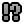

- You control the green province on the map.
- Your goal is to expand your province and destroy all rival
 towns.
towns.
- A province won't survive without a town, so make sure to protect yours!

- Each turn you gain one
 coin for each tile in your
province.
coin for each tile in your
province.
- But you also pay the upkeep cost for every
 unit you own!
unit you own! - Surplus coins go to
 treasury in the town. Use them to buy more units.
treasury in the town. Use them to buy more units.

- You can move units anywhere within your province (there's no movement range!) and use them to conquer tiles adjacent to the province.
- But you can't conquer tiles protected by an enemy unit of equal of greater strength! For example a
 pikeman cannot conquer a tile protected by another pikeman.
pikeman cannot conquer a tile protected by another pikeman. - Every unit protects its adjacent tiles. Use that to prevent the enemy from invading your province!
- Towns have the same strength as a villager and
 castles have the same strength as pikemen.
castles have the same strength as pikemen.

- In Konkr, your opponents play a lot like real humans:
- They always play to win, don't expect them to settle for second place!
- They are vindictive and eager to retaliate, so think twice before provoking them.
- They join forces against a dominant player (on hard difficulty, that means even against you!).
- The
 emoji over enemy towns tells you how the rival thinks about you.
emoji over enemy towns tells you how the rival thinks about you. - But remember, there are no permanent alliances and every ruler looks after their own interests first, no matter how much they like you!
- Units with no access to town are marked as  stranded and become bandits next turn. This is irreversible, so make sure not to leave your units open to be cut off like that!
- Bandits serve only themselves. They move randomly around the map and steal income from any tiles they land on.
- The stolen coins are taken to a nearby
 Bandit
camp. These camps can spawn new bandits once there are at least 3 coins
stored.
Bandit
camp. These camps can spawn new bandits once there are at least 3 coins
stored.
The rules of Konkr are quite simple, but it takes a while to get used to them! Learn, adapt and prevail!

- You can issue many actions in Konkr with keyboard!
- When you click the Undo button on the start of the turn, you have options to Rewind time to the start of previous turn (you can do this only 3 times per game), or restart the current map.
- shift-click to buy multiple units in a row.
- ctrl-click buttons to bypass confirmation prompts.